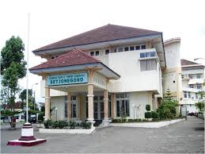
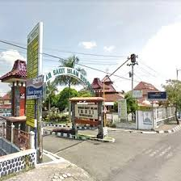

Rapid test to detect the presence of the Corona Virus


RSUD SETJONEGORO


RSI WONOSOBO

RSUD Setjonegoro Wonosobo merupakan rumah sakit umum daerah yang berada di Kota Wonosobo. RSUD KRT. Setjonegoro didirikan pada tahun 1930 . Sejak tahun 1948 sampai dengan tahun 1987 Rumah Sakit ini ditetapkan sebagai Rumah Sakit Umum dan dikelola oleh Propinsi Jawa Tengah, selama kurun waktu tersebut terjadi enam kali pergantian pimpinan rumah sakit. Berikut ini adalah sejarah perkembangan RSUD KRT. Setjonegoro beserta para pimpinan rumah sakit. Visi : Menjadi Rumah Sakit yang Terunggul Bermutu dan Terpercaya Misi : Menyelenggarakan Pelayanan Kesehatan yang Berfokus pada Pelanggan Sesuai standar nasional
Dana Pensiun Muhammadiyah adalah badan hukum yang mengelola dan menjalankan program yang menjanjikan manfaat pensiun bagi karyawan yang bekerja pada Amal Usaha milik Muhammadiyah.
RSI Wonosobo merupakan rumah sakit yang berada di Kota Wonosobo. Berdirinya Rumah Sakit Islam Wonosobo diawali dari gagasan yang dicetuskan dalam Sarasehan Ulama dan Umaro yang diselenggarakan setiap malam Jumdanrsquo;at Kliwon oleh Yayasan Amal dan Kesejahteraan Umat Islam (YAKAUMI) pada periode ke : 6 Tanggal 29 Agustus 1991.